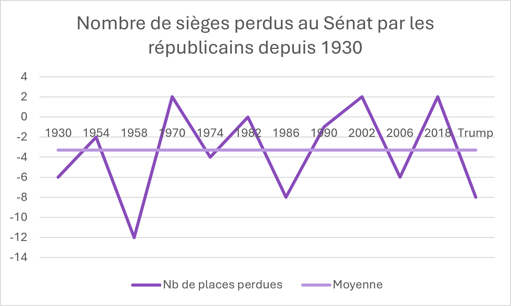
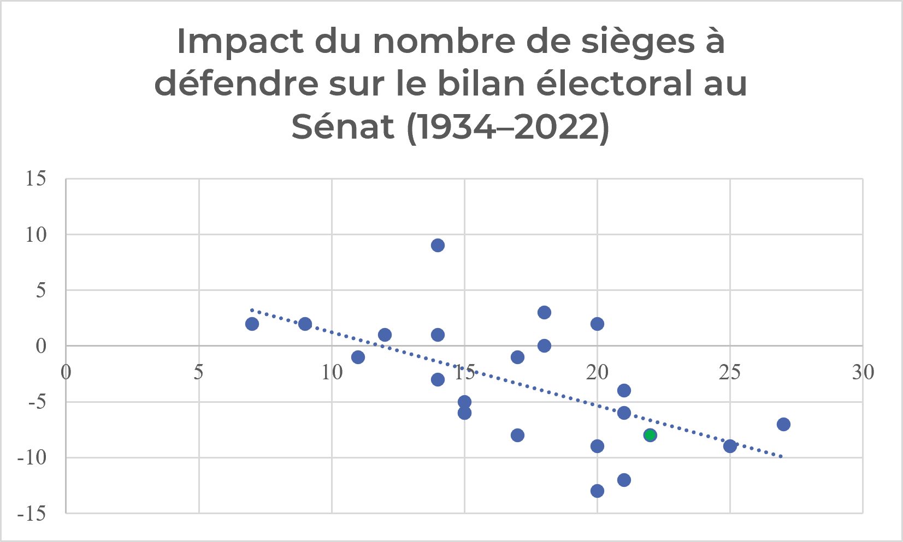

Les élections de mi-mandat de 2026 sont-elles vraiment une défaite historique ?
Analyse critique des midterms américaines
Pour les médias, une défaite « historique »
« Une défaite historique » : c’est en gros, à quelques mots près, ce qu’ont titré les principaux médias français, du Monde au Figaro en passant par Médiapart1, pour qualifier les élections de mi-mandat américaines qui se sont déroulées ce mardi 3 novembre. Mais cette défaite est-elle vraiment historique ? Dans quelle mesure ?
Les élections de mi-mandat doivent renouveler un tiers du Sénat (une trentaine de sénateurs) et l’intégralité de la Chambre des représentants, soit 435 sièges. Elles servent traditionnellement (c’est le split ticket) de contre-pouvoir à l’exercice présidentiel.
Au Sénat, une défaite historique surtout en apparence

Le graphique ci-dessus représente le nombre de sièges perdus par les républicains lorsqu’ils étaient au pouvoir au Sénat aux élections de mi-mandat. Avec une moyenne à −3,3 sièges perdus et un écart-type d’environ 4, la défaite de Trump semble bien se situer parmi les pires du camp républicain, avec 1958 et 1986. Toutefois, allons plus loin que ces simples chiffres absolus. En effet, plus le nombre de sièges défendus est important, plus les pertes le sont (coefficient de corrélation de −0,61). La situation de Donald Trump, le point vert dans le graphique ci-dessous, est très proche de la courbe générale de tendance observée, et en cela, la défaite de Trump n’a rien d’historique au sens strict du terme puisqu’elle s’inscrit dans un schéma classique où le nombre de sièges à défendre au Congrès a plus d’impact que sa popularité à un instant t.

À la Chambre des représentants, une victoire démocrate évidente, mais en demi-teinte
Les démocrates ont gagné la Chambre des représentants, 228 au moment où cet article s’écrit, et jusqu’à 251 à 268 sièges selon les projections2, tandis que les républicains perdent entre 36 et 53 sièges. C’est, pour les démocrates, leur plus grande majorité depuis le début des années 1990. Pourtant, cette victoire est moins spectaculaire que ne le laisserait attendre l’ampleur du basculement des voix. D’après une première analyse reprise par Axios, les démocrates devraient, à terme, remporter ces élections avec 13 points d’avance3, or leur gain net en sièges est comparable à celui de 2018 (environ 41 sièges), obtenu avec un écart de 8,6 points, soit 5 de moins. La chose s’explique notamment par le gerrymandering, une stratégie électorale qui consiste à découper les circonscriptions de façon à concentrer les électeurs adverses dans un petit nombre de districts ou à les disperser entre plusieurs districts où ils restent minoritaires.
Pourquoi tant parler d’une défaite historique ?
Alors pourquoi parle-t-on tant d’une défaite historique si ces résultats s’inscrivent dans une tradition politique naturelle aux États-Unis ? En fait, celle-ci s’explique d’abord par la nature très personnelle de ces élections : Trump avait demandé à ses sympathisants de « faire comme si [il était] sur le bulletin »4, mais il avait également imposé certains candidats, notamment en Caroline du Sud, en Caroline du Nord, au Michigan et au Texas ; le qualificatif « historique » s’applique non pas à la défaite du camp présidentiel aux élections de mi-mandat, qui est une tradition aux États-Unis (c’est ce qu’on appelle le split ticket ou ticket partagé), mais au premier désaveu de sa carrière exprimé par les urnes. Environ 43 %5 des électeurs disent avoir voté pour lui exprimer leur opposition, plus qu’en 2018. La perte combinée de la Chambre des représentants et du Sénat est elle aussi rarissime, puisque la dernière occurrence date de 20066, avec des bastions républicains (le Texas et le Kansas) où aucun démocrate n’avait gagné depuis 1988 et 1932.
Ce résultat au Congrès était-il prévisible ?
Notons que ce résultat au Sénat était prévisible. Si nous avions précisé que la popularité de Donald Trump avait un impact davantage négligeable que son nombre de places à défendre au Sénat, l’analyse des données (voir tableaux en annexe) permet toutefois d’établir un modèle de régression linéaire multiple reliant le solde des sièges au Sénat à deux variables : 1) la popularité du président (mesurée par l’institut Gallup) et 2) l’exposition de son parti, via la formule suivante :
\[\text{Bilan au Sénat} \approx 0{,}14 \times \text{Approbation} - 0{,}66 \times \text{Sièges défendus}\]
Dans cette équation, chaque point de popularité supplémentaire rapporte environ un siège, tandis que chaque siège mis en jeu coûte un siège au total. Appliqué à Donald Trump avec une cote d’approbation d’environ 33 % et 22 sièges à défendre, le modèle prévoyait une perte de 9 à 10 sièges, un résultat assez proche de la réalité observée. Idem à la Chambre des représentants avec cette équation :
\[\text{Bilan} \approx 10 + 0{,}49 \times \text{Approbation} - 0{,}27 \times \text{Sièges défendus}\]
Le modèle prévoit entre 31 et 35 sièges perdus, contre 36 à 53 sièges perdus pour les élections réelles.
Conclusion
En somme, ces résultats aux élections, notamment au Congrès, sont relativement classiques ; la nature historique réside davantage dans la perte simultanée de la Chambre des représentants et du Sénat (depuis 1934, les seules fois où de tels événements sont arrivés se sont passées en 1946, en 1954, en 1994 et en 2006) et l’ampleur du rejet populaire national.
Annexe
Tableau 1 : Nombre de sièges perdus au Sénat par les républicains depuis 1930
| Année | Président en exercice | Parti présidentiel | Chambre : bilan net | Sénat : bilan net | Contrôle après scrutin |
|---|---|---|---|---|---|
| 1930 | Herbert Hoover | Républicain | −52 | −6 | Démocrates : Chambre ; Républicains : Sénat |
| 1934 | Franklin D. Roosevelt | Démocrate | 9 | 9 | Démocrates : les deux chambres |
| 1938 | Franklin D. Roosevelt | Démocrate | −72 | −7 | Démocrates : les deux chambres |
| 1942 | Franklin D. Roosevelt | Démocrate | −45 | −8 | Démocrates : les deux chambres |
| 1946 | Harry S. Truman | Démocrate | −54 | −10 | Républicains : les deux chambres |
| 1950 | Harry S. Truman | Démocrate | −28 | −5 | Démocrates : les deux chambres |
| 1954 | Dwight D. Eisenhower | Républicain | −18 | −2 | Démocrates : les deux chambres |
| 1958 | Dwight D. Eisenhower | Républicain | −48 | −12 | Démocrates : les deux chambres |
| 1962 | John F. Kennedy | Démocrate | −4 | 4 | Démocrates : les deux chambres |
| 1966 | Lyndon B. Johnson | Démocrate | −47 | −3 | Démocrates : les deux chambres |
| 1970 | Richard Nixon | Républicain | −12 | 2 | Démocrates : Chambre ; Républicains : Sénat |
| 1974 | Gerald Ford | Républicain | −48 | −4 | Démocrates : les deux chambres |
| 1978 | Jimmy Carter | Démocrate | −15 | −2 | Démocrates : les deux chambres |
| 1982 | Ronald Reagan | Républicain | −26 | 0 | Démocrates : Chambre ; Républicains : Sénat |
| 1986 | Ronald Reagan | Républicain | −5 | −8 | Démocrates : les deux chambres |
| 1990 | George H. W. Bush | Républicain | −8 | −1 | Démocrates : les deux chambres |
| 1994 | Bill Clinton | Démocrate | −54 | −9 | Républicains : les deux chambres |
| 1998 | Bill Clinton | Démocrate | 4 | 0 | Républicains : les deux chambres |
| 2002 | George W. Bush | Républicain | 8 | 2 | Républicains : les deux chambres |
| 2006 | George W. Bush | Républicain | −32 | −6 | Démocrates : les deux chambres |
| 2010 | Barack Obama | Démocrate | −63 | −6 | Républicains : Chambre ; Démocrates : Sénat |
| 2014 | Barack Obama | Démocrate | −13 | −9 | Républicains : les deux chambres |
| 2018 | Donald Trump | Républicain | −41 | 2 | Démocrates : Chambre ; Républicains : Sénat |
| 2022 | Joe Biden | Démocrate | −9 | 1 | Républicains : Chambre ; Démocrates : Sénat |
Tableau 2 : Impact du nombre de sièges à défendre sur le bilan électoral au Sénat (1934–2022)
| Année | Parti Prés. | Chambre : Sièges défendus | Chambre : Bilan | Chambre : Loss % | Sénat : Sièges défendus | Sénat : Bilan | Sénat : Loss % |
|---|---|---|---|---|---|---|---|
| 1934 | D | 313 | 9 | 2,9 % | 14 | 9 | 64,3 % |
| 1938 | D | 334 | −72 | −21,6 % | 27 | −7 | −25,9 % |
| 1942 | D | 267 | −45 | −16,9 % | 25 | −9 | −36,0 % |
| 1946 | D | 244 | −56 | −23,0 % | 21 | −12 | −57,1 % |
| 1950 | D | 263 | −28 | −10,6 % | 21 | −6 | −28,6 % |
| 1954 | R | 221 | −18 | −8,1 % | 11 | −1 | −9,1 % |
| 1958 | R | 203 | −48 | −23,6 % | 20 | −13 | −65,0 % |
| 1962 | D | 264 | −4 | −1,5 % | 18 | 3 | 16,7 % |
| 1966 | D | 295 | −47 | −15,9 % | 21 | −4 | −19,0 % |
| 1970 | R | 192 | −12 | −6,3 % | 7 | 2 | 28,6 % |
| 1974 | R | 192 | −48 | −25,0 % | 15 | −5 | −33,3 % |
| 1978 | D | 292 | −15 | −5,1 % | 14 | −3 | −21,4 % |
| 1982 | R | 192 | −26 | −13,5 % | 12 | 1 | 8,3 % |
| 1986 | R | 181 | −5 | −2,8 % | 22 | −8 | −36,4 % |
| 1990 | R | 175 | −8 | −4,6 % | 17 | −1 | −5,9 % |
| 1994 | D | 258 | −54 | −20,9 % | 17 | −8 | −47,1 % |
| 1998 | D | 207 | 4 | 1,9 % | 18 | 0 | 0,0 % |
| 2002 | R | 220 | 8 | 3,6 % | 20 | 2 | 10,0 % |
| 2006 | R | 233 | −30 | −12,9 % | 15 | −6 | −40,0 % |
| 2010 | D | 257 | −63 | −24,5 % | 15 | −6 | −40,0 % |
| 2014 | D | 201 | −13 | −6,5 % | 20 | −9 | −45,0 % |
| 2018 | R | 241 | −41 | −17,0 % | 9 | 2 | 22,2 % |
| 2022 | D | 222 | −9 | −4,1 % | 14 | 1 | 7,1 % |
Midterms 2026 : Donald Trump subit une défaite historique, du Texas au Michigan ; Raz-de-marée démocrate et déroute historique pour Trump aux élections de mi-mandat | Mediapart ; Une défaite historique pour Donald Trump aux midterms… Les informés de franceinfo du mercredi 4 novembre 2026 – franceinfo ; Inflation, guerre en Iran, corruption : L’Amérique a répudié le trumpisme ; La fin de l’« effet Trump » est une victoire de la démocratie | France Inter↩
NBC News – Midterm election results 2026 ; CBS News – Election Day 2026 midterms↩
Donald Trump made the midterms a referendum on himself, and the voters obliged – The Week↩
Al Jazeera – Democrats win control of House and Senate: key US midterms takeaways↩